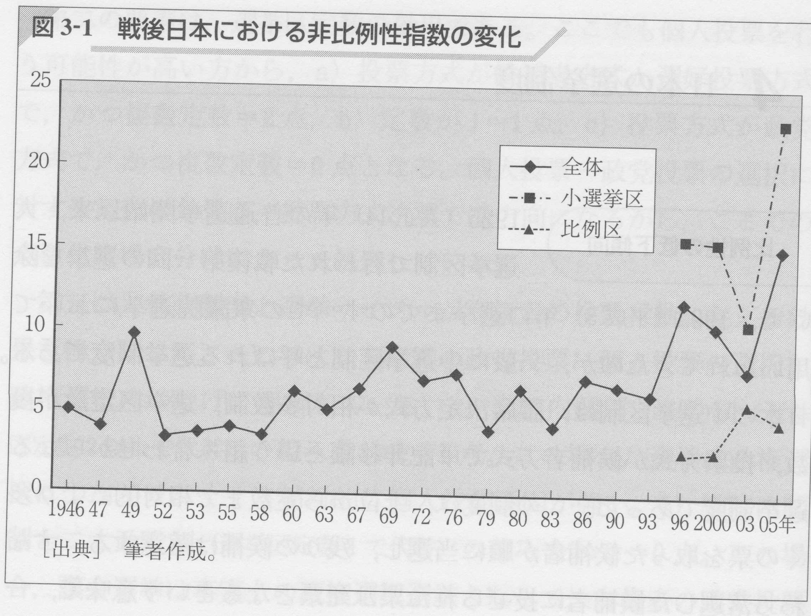
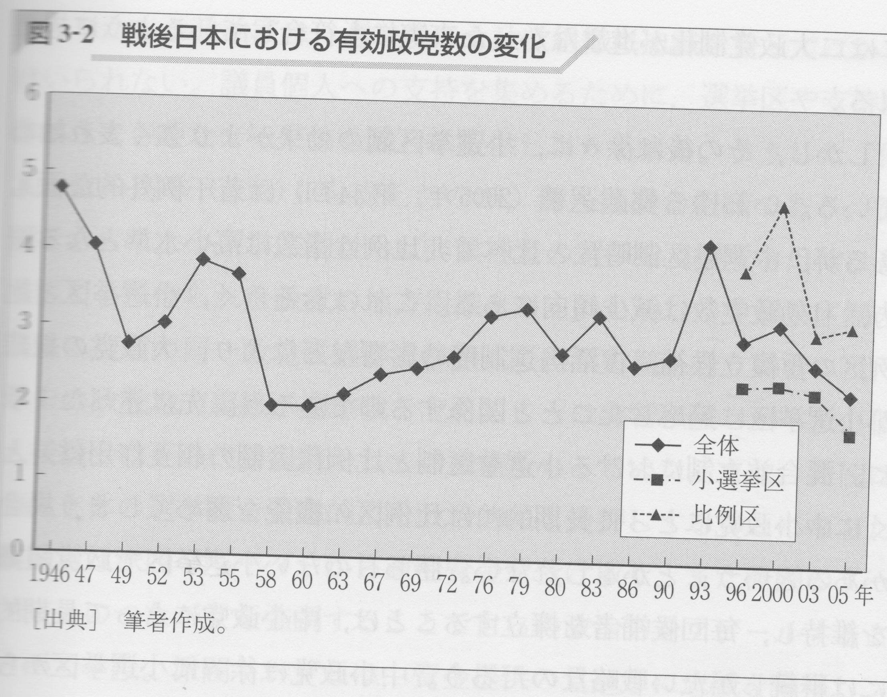
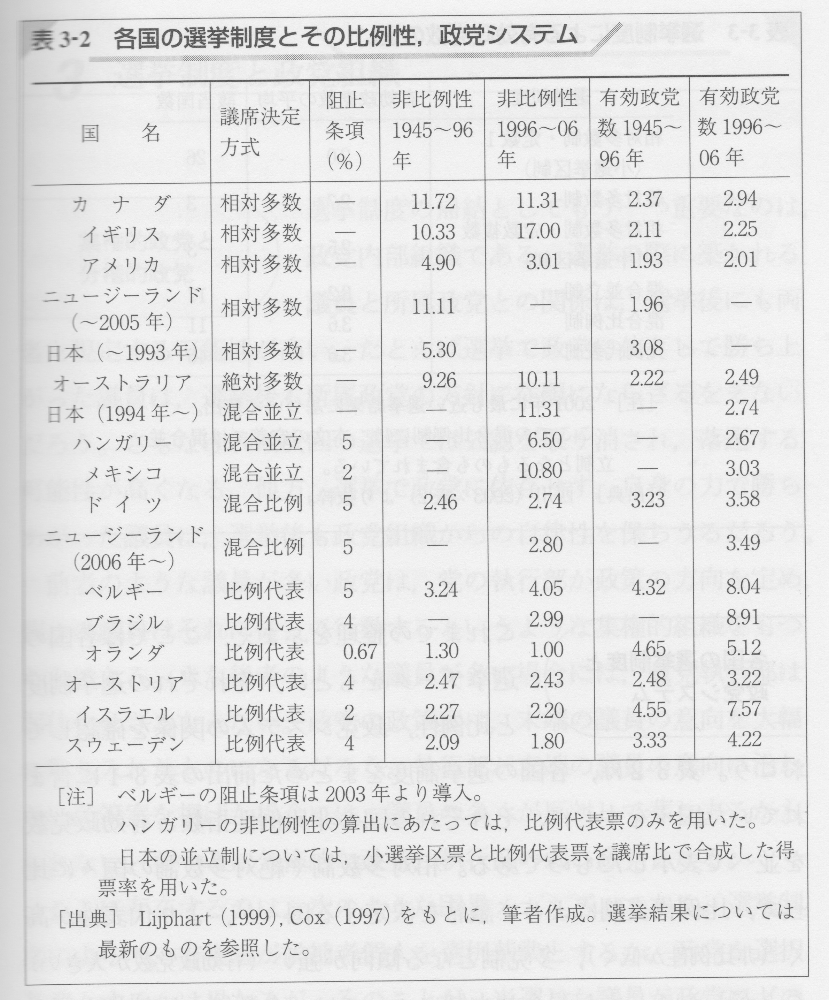
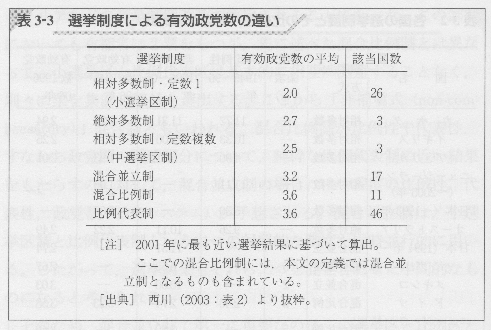

政治学概論Ⅱ ＃11 比較政治学（3）
選挙制度と議会制度
![]()
2025年2月6日
キーワード
キーワード
- 比例性
- 代表性
- 有効政党数
- 効率性
- 開放性
授業の感想
授業の感想
1. 国際法
曖昧な不文法 慣習国際法の性格についての部分が印象に残ったからである。学習するまでは、慣習国際法は不文法であるため、成文の法にしたほうが各国への法的拘束力も強まり、より国際社会が一体化できるのではないかと私は感じていた。しかし、あらゆる事柄の条約を作って、それにすべての国が参加することは難しいのが現実である。そこで慣習国際法が、ゆるやかに国際社会全体を包み込む法規範として存在することで、最小限の法秩序の維持に役立つということが興味深かった。曖昧な不文法であるからこその、国際社会の中での役割が印象に残った（内坂）。
国際法と国内法 国際法には、ハーグ条約のように、異なる国同士に関わる法があるが、関わっている国の国内法には、その国際法と同じような条約がない場合もあり、その場合、事例のように民事上の問題が発生したり、相手の国に判断を任せたりしなければならないため、国際法と国内法の違いについてよく考えることが大切だと感じたから。また、国際法と同じような国内法を作成しない国がなぜ作らないのか、という理由が知りたいと思った（黒田）。
授業の感想 > 国際法
国際法を学ぶ意味の箇所が重要だと思った。この箇所を学習する前まではあくまで慣習法に過ぎず、法としての強制力や拘束力が十分に機能しているとは言えない国際法はただ単に国際社会における形式上の規則でしかなく、なかなかその存在意義を見出せなかった。しかし、今回の授業を通して、国際法は法としての機能面を担うのではなくその法的思考が国際関係を把握し、統御するための道具として必要であることを学び、今までの国際法に対する認識が大きく変化したからである。今後教員として授業で国際法を取り扱う際には決して断片的に教えるのではなく、各国の政府および市民団体が自らの実践を正当化するために国際法を利用しているという事実等をしっかりと伝え、児童生徒が国際法について多面的に考えられる指導を行っていきたい（高橋）。
授業の感想
2. 国会中継
国会中継について これまでの国会についての印象では、テレビのニュースなどで取り上げられるような、荒れている様子や居眠りの様子などあまり良い印象ではなかったが、今回実際に過去のアーカイブや中継を見てみて、質問や返答が適切に行われているように感じた。これまでの印象とは違うものだったので、今後教員になった際には、荒れている様子などだけでなく、適切に会議が行われている様子もともに見せていく必要があるなと感じた（丹後）。
国会中継について 私たちが普段目にしているメディアではある種の決めつけのようなものに繋がるものが多く、情報を探らずに判断することの危険さについて再認識することが出来た。しかし質問に対してはっきりと答えていないと思われる場面が複数見られ、論点がずれていると感じることも多々あった。寝ている議員がいるということやスキャンダルがどうこうと言う前にまずは情報を正確に国民に伝え有耶無耶にしないといったことを心がけていくべきなのではないかと感じた。また今回議論されていた高齢者へのデバイスの支援などについて知らないことが沢山あり、予算がそこまでかけられていることを全く知らなかったためもっと日頃からそういった情報に敏感になっていきたいと感じた（松本）。
授業の感想 > 国会中継
日本政治のおかしなところ 予算は事前に自民党内部で決められているため、野党が議論を持ち掛け行っても予算再編成には中々つながらないということは、議論を交わしながら行う政治とはかけ離れているように感じた。また、自民党内部で取り決めた予算案がなぜ公開されないのかが疑問だった。国家全体に関わる重要な決め事である分、一部でも野党、国民に開示するべきではないかと感じた（藤井）。
授業の感想
3. 比較政治学
「文化は説明のごみ箱」 私は授業内で扱った比較政治制度論の中で出てきた「文化は説明のごみ箱」という言葉を聞きすごく納得した。高校の時も大学に入ってからも社会科の授業を受けていると、文化の違いによる対立や争いという事象をよく扱う。しかし、文化という言葉はそれらの物事を簡単に片づけてしまうためのものに過ぎず、社会科を学ぶという事はその背景にある本質的な部分を見ることなのだと感じた（吉岡）。
リーディング・アサインメント
リーディング・アサインメント
ただし、政党全体への支持を伴う個人投票 理由は、様々な法や憲法の改正や夫婦別姓などの諸制度について議論されている現代の日本において、多数派に有利なアジェンダ・ルールでは多数派が保守的だとこれらの改正が進まなかったり、逆に採決ルールにおいても少数派がこれを盾にして議案の審議や採決を抑制したりすると、日本は変わらないのでその塩梅が重要になってくると考えたから（赤星）。
日本もそれに含まれる179 確かにこれまでの日本政治は、議会運営は与党がほぼ全部していた気がするし、過半数は普通に超えていたので与党が出した法案や予算は通っていた。なので、効率性は高いのかなと思うけど、開放性は低く、野党は蚊帳の外みたいな感じだった。しかし、現在は、与党は過半数切ったので、法案や予算が通りづらくなっている。また、委員会の委員長ポストも野党にも多く行っているので、少数派も輝き出した気がする。なので、今の日本の現状を考えてみるのも、面白いと思ったので（片山）。
リーディング・アサインメント
議会は相反する二つの課題を担った機関なのであり、すべての議会は効率性と開放性のいずれを重視するかという選択を行っているという箇所が面白いと思った。(p.172) その理由は民主主義体制下の議会において重要な効率性と開放性の両要素を確保しつつも、やはりどちらとも完璧に遂行するには限界があるからこそ、効率性と開放性のいずれを重視するか選択している点が非常に合理的かつ現実的だと感じたからである。ここで効率性を重視するともちろん利点もある反面、政策に関する十分な議論が行われないまま採決に至る可能性があるといった問題点が懸念される。この利点と問題点の両側面を内包することは開放性においても同様のことが言えるため、各国の議会でしっかり検討される余地がある議題だと考えた（高橋）。
議会制の基本要素170-171 議会制度の基本的な構成要素について議論されており、特に議会の役割や民主主義における機能が整理されている点が重要だった。議会は単なる意思決定機関ではなく、選挙制度や執政制度と密接に関連し、政策形成に影響を与える。議会の正統性はどのように担保されるのか、また、意思決定の透明性や効率性をどのように確保するかが論じられていた点が興味深かった。特に、議会が執政部門からどの程度自律できるかという問題提起が印象的だった（丹後）。
リーディング・アサインメント
少数派が会期切れに持ち込むことで、多数派の提案を否決することが可能になる P175 少数派の意見が無視されないように、会期を設けることは必要な措置だと考える。しかし、2018年の「働き方改革関連法案」審議では、野党が厚生労働省のデータ不備を追及し、審議を長引かせる戦略を取ったが、最終的には与党が会期を延長し成立させるといった事案があった。このように、少数派の意見を尊重する仕組みがあっても、中々その措置が今を成さない場合もあるため、議会のルールを再考することも必要だと感じ、この部分が重要であると思った（藤田）。
選挙制度
選挙制度の定義と構成要素
⑴ 選挙制度
- 国民の代表（政治家）をどのようにして選び出すかを定めるルール
- 投票の方法；投票の集計方法；集計票に基づく当選者決定方法など
⑵ 選挙制度の変更
- 有権者と政治家、政党との関係に変化
- 政治家や政党同士の競争の有り様（政党システム）に変化
選挙制度の定義と構成要素
⑶ 選挙制度の基本的諸要素
- 各国の選挙制度に共通する基本要素
- 固有名詞を消し、分析カテゴリーに置き換える
- 以下の1から4のパターンの組み合わせで分析
- 議席決定方式（electoral formula）
- a: 多数制（多数代表制）：相対多数制（plurality）；絶対多数制（majority）
- b: 比例代表制（proportional representation）
- 議席換算は各国によって異なる；最低得票率の有無など
- 選挙区定数（district magnitude＝選挙区の規模）
- 実質的には議員定数を指す
- a: 小選挙区制（single-member district）
- b: 大選挙区制（multi-member district）
- 複数の議員を同一選挙区から選ぶ制度
- 例：1993年までの衆議院の中選挙区制；参議院選挙区選挙；都道府県議会選挙の一部
選挙制度の定義と構成要素
- 投票方式（ballot structure）
- 有権者が自分の選択を表現する方法
- a: 候補者方式
- b: 政党方式
- c: 選好投票方式：政党への投票とその政党の中の個別の候補者への投票を同時に行なうもの
- 選挙サイクル（electoral cycle）
- 任期；再選制限；選挙のタイミング（大統領、上院・下院、地方議会などの複数の選挙の時間差）
- 日本：衆議院；参議院；（統一）地方選挙
比較を可能にするための指標
- 比例性（⇄代表性）；有効政党数；個人投票と政党投票
- Cf. 独立変数：選挙制度（の共通する基本要素。上述）
- 従属変数：比例性（代表性）；有効政党数；個人投票と政党投票
- Cf. 独立変数：選挙制度（の共通する基本要素。上述）
⑴ 比例性と代表性
- 議会において少数意見がどの程度、反映されるべきか
- 比例性が高い（代表性が低い）：票数（民意）を議席数に忠実に反映
- 比例性が低い（代表性が高い）：票数にある変換を加えて議席数に反映
比較を可能にするための指標
選挙制度が政党システムに直接的、間接的に及ぼす影響は、究極的にはその国の民主主義体制のあり方そのものを規定する。代表者は社会そのままの鏡であるべきなのか、より積極的に変換がそこには加えられるべきなのか。社会の中のさまざまな勢力や集団のうち、どの部分が代表されやすいのか、あるいは代表されにくいのかということが、選挙制度によって決められているからである（建林・曽我・待鳥 2008: 73）
比較を可能にするための指標
- 比例性（代表性）の規定要因
- 議席決定方式
- 相対多数制と絶対多数制：多数派に有利；死票の多い選挙制度
- 比例代表制：少数派に有利
- 選挙区定数
- 定数が多くなればなるほど少数派が代表されやすくなる
- 定数：当選に必要な最低得票ラインを規定（「基数」と呼ぶ）
- 議席決定方式
比較を可能にするための指標 > 比例性と代表性 > 比例性（代表性）の規定要因
- Cf. デュヴェルジェの法則
- 小選挙区制は二大政党制を促す；比例代表制は多党制を促す
- Cf. 参議院選挙の問題点：1人区と複数区
- 都市の選挙区：少数派意見も代表される
- 地方の選挙区：少数派意見は代表されない
- 同じ院の議員を選出する選挙でありながら、異なる民意が集約される仕組みになっている
比較を可能にするための指標
⑵ 有効政党数
- 政党システム（複数の政党の競争と協調を規定する構造）を政党の数によって把握する。ただし、各政党の相対的な規模により重みづけを課す
- a: 二大政党制：有効政党数が少ない政党システム
- b: 多党制：有効政党数が多い政党システム
有効政党数は議席（あるいは選挙での得票）をもつ政党が増えるほど大きくなる。他方で、政党の数は同じでもそれらの勢力の差が大きいほど、有効政党数は小さくなる（建林・曽我・待鳥 2008: 140）
比較を可能にするための指標
⑶ 個人投票と政党投票
- 投票基準：人を選ぶ（個人投票）か、党を選ぶ（政党投票）か
- 選挙制度が投票基準を大きく規定
- 投票方式：
- 候補者方式か選好投票方式の場合
- 個人投票の傾向が強まる
- 政党方式の場合
- 政党投票の傾向が強まる
- 候補者方式か選好投票方式の場合
比較を可能にするための指標 > 個人投票と政党投票
- 議席決定方式
- 小選挙区制：政党投票への誘因が強まる
- 中選挙区制や大選挙区制：個人投票への誘因が強まる
- 定数が多くなればなるほど、同一政党に所属する者が同一選挙区から立候補するから（政党ラベルに頼れない）
- 拘束名簿式比例代表制：政党投票への誘因が強まる
- ただし、定数が非常に小さい場合、個人投票を強める
- 非拘束名簿式比例代表制：個人投票への誘因が強まる
- ただし、政党全体への支持を伴う個人投票
戦後日本の事例と各国比較
⑴ 戦後日本
- 平成の選挙制度改革により、個人投票誘因の強い制度から、政党投票誘因の強い制度へと変化
戦後日本の事例と各国比較 > 戦後日本
- 図3-1：戦後日本における非比例性指数の変化
戦後日本の事例と各国比較 > 戦後日本
- 図3-2：戦後日本における有効政党数の変化
戦後日本の事例と各国比較
⑵ 各国比較
- 通説：二大政党制×単独内閣＝政治的安定
- 多党制×連立内閣＝政治的不安定
- 対抗仮説：比較政治学による知見（レイプハルトら）
- 北欧・中欧など比較対象を広げる
- 伝統的理解に反する事例が多々見られる
戦後日本の事例と各国比較 > 各国比較
- 表3-2: 各国の選挙制度とその比例性、政党システム
戦後日本の事例と各国比較 > 各国比較
- 表3-3: 選挙制度による有効政党数の違い
議会制度
議会制度
1. 議会制度の規定要因
- 執政制度；政党制度（選挙制度）；提案権の所在；二院間の権限関係
2. 議会制度の構成要素
- 議会
主権者からの委任を受けた人々が議員として集まり、政策など政治的判断を必要とする事柄について話し合い、立法という意思決定を行う機関（建林正彦・曽我謙悟・待鳥聡史 (2008), p.170）。
- 議会制度
- 議会内過程を規定するルール
- 憲法；法律；議会内規則
- 議会内過程を規定するルール
議会制度 > 議会制度の構成要素
限られた時間の中で、だれが、いつ、どのようなタイミングで法案や予算を提出し、それをどこで、だれのイニシアティブで、どのぐらい審議し、さらにはいつ、どのような形で採決し決定するのかに関する取り決めのことである（建林正彦・曽我謙悟・待鳥聡史 (2008), p.172）。
- ➡ 少数派が議会運営や政策帰結に影響力を行使しうるかどうか
建林・曽我・待鳥（2008）の設定する課題
- 議会制度はどのように分類されるべきなのか
- 議会制度の類型は議会が行う意思決定の特徴にどのように関係するのか
- 議会内過程を規定するルールが、政治的アクターや政策選択にどのように影響するのか
- Cf. 従来の研究：議会制度そのものではなく、議会と執政関係、議会内での政党間関係が中心
議会への要請と分類
1. 議会への要請（カテゴリー）
- 効率性：審議時間と法案数
- 開放性：少数派を含め、議会の構成員すべてに対して、議会内過程をできるだけ開放する
2. 分類
- 効率性と解放性、どちらをより重視するか
- 多数派意見（民主的正統性）を尊重するか、少数派意見を保護するか
- 分類1：「効率性重視型」議会制度
- 分類2：「開放性重視型」議会制度
議会への要請と分類
3. 効率性と開放性を決める具体的なルール
1) アジェンダ（提案）・ルール
- 議会多数派が、議案の提出から審議にかけての議会運営の主導権をどの程度掌握するかを規定するルール
- 提案の具体例：
- 法案提出権 1；修正権；日程設定権（法案の審議順；質問時間配分）
- 審議の具体例：
- 委員会の権限；委員会メンバーの構成；委員会議長（副議長）の選出 2 3 4
- 提案の具体例：
議会への要請と分類 > 効率性と開放性を決める具体的なルール
2) 採決ルール（採決プロセスにかかわる）
- 二院間の権限関係；定足数；多数決；記録投票など
- 会期
- 採決に至るまでの残り時間
- 少数派は会期切れに持ち込むことで、多数派提案を事実上、否決可能
二つのルール
- このルールの組み合わせによって、各国議会の特徴が多様となる
- ふたつのルールは相関する
- 相互に矛盾するような制度設計、運用をしないため
議会への要請と分類 > … > 二つのルール
- Cf. 図6-1：議会制度の特徴
- 「効率性重視型」議会制度：多数派に有利
- 「開放性重視型」議会制度：少数派に有利
議会制度の帰結
議会制度の4類型
- 効率性重視型議会制度＋政党が一体性を保っている場合の帰結
- 議会内過程を形骸化
- ラバー・スタンプ論
- 例：イギリス議会
- 効率性重視型議会制度＋政党が一体性をもたず、議会多数派が固まっていない場合
- 多数派形成のために、政策内容の修正が議会内過程に持ち込まれる
- 政策は中庸化、穏健化する
議会制度の帰結 > 議会制度の4類型
- 開放性重視型議会制度＋政党が一体性を保っている場合の帰結
- 野党に事実上の拒否権を与える
- 多数派の提案を採決させないことにより、現状維持が可能
- 課題な規模の多数派が必要となるがゆえに、過剰な歳出拡大がなされる
- 開放性重視型議会制度＋政党が一体性を保っていない場合
- 少数派である一部の議員が、自分たちの望む政策を実現できる可能性あり
日本の議会制度
⑴ 日本の国会制度
- 委員会中心主義
- 委員会理事会において、議事運営は全会一致の慣行あり
- 会期不継続の原則
- ただし、継続審議手続きが可能
- 対等性が強い二院制
日本の議会制度
⑵ 研究者の解釈
- 通説：国会における野党の「粘着性」論
- 野党が様々な手段を用いて、内閣提出法案の成立を防止、もしくは遅らせることを目指す
- ➡ 日本の国会制度は、少数派に有利に作用する傾向あり
- 対抗仮説：粘着性論への批判
- 各国比較をとおして、日本の国会は、多数派に有利であると解す
宿題
宿題
- 授業の感想
対面授業の際は、各コマではなく、一日の授業うちで１つのトピックについて書いて下さい
- リーディングアサインメント
- レポート課題
内容､期日については「提出物（提出先）」を参照